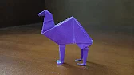
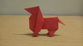
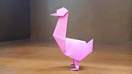
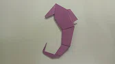
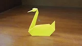

Interesting Facts about a camel:
- Camels have three sets of eyelids and two rows of eyelashes to keep sand out of their eyes
- Camels will not damage their mouths if they eat thorny twigs and other items which might cause injury to other animals
Camel

Interesting Facts about a dog:
- Bloodhounds can follow tracks that are over 300 hours old and can stay on a trail for over 130 miles
- Dogs can be trained to to detect cancer and other diseases in humans
Dog

Interesting Facts about a goose:
- Geese can see UV light
- Geese also have the ability to control each of their eyes independently
Goose

Interesting Facts about a sea horse:
- Their eyes work independently of one another. They can even keep one eye looking behind them
- Seahorses propel themselves by using a small fin on their back that flutters up to 35 times per second
Sea Horse

Interesting Facts about a swan:
- Swans can fly as fast as 60 miles per hour
- The fear of swans is known as kiknophobia or cygnophobia
Swan